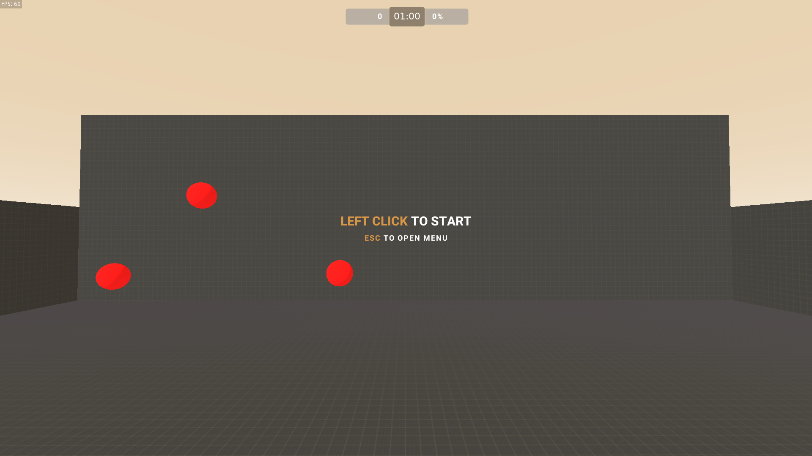
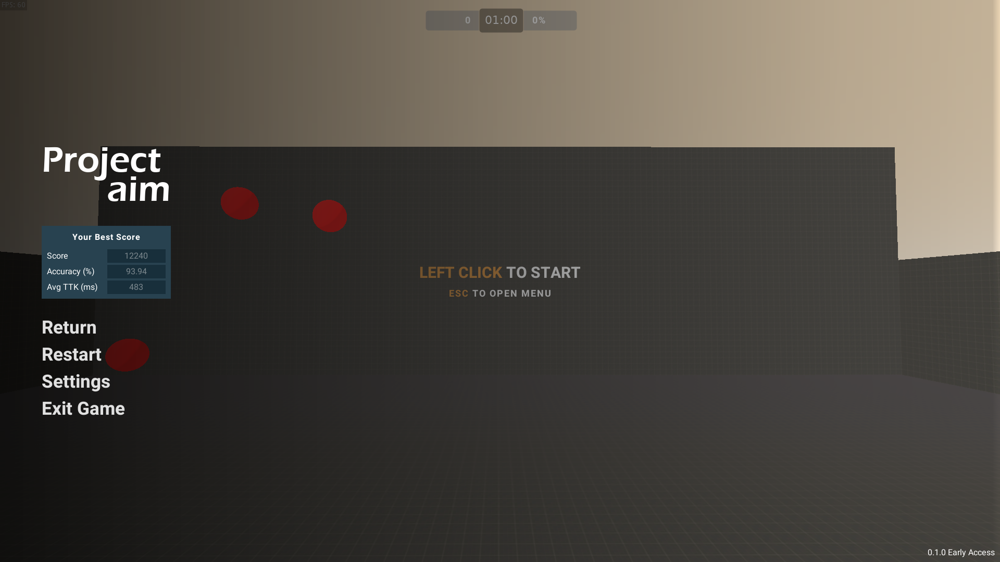
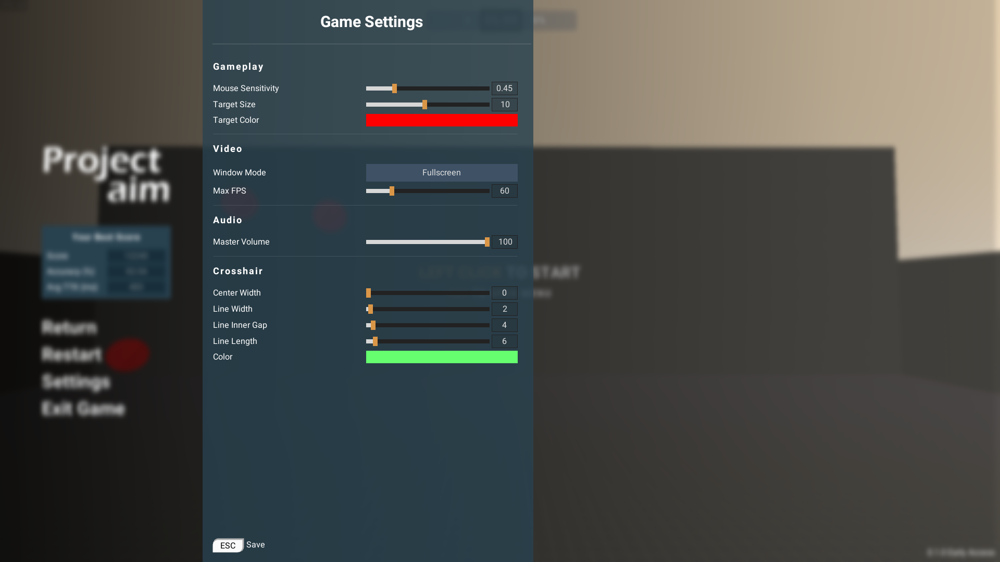
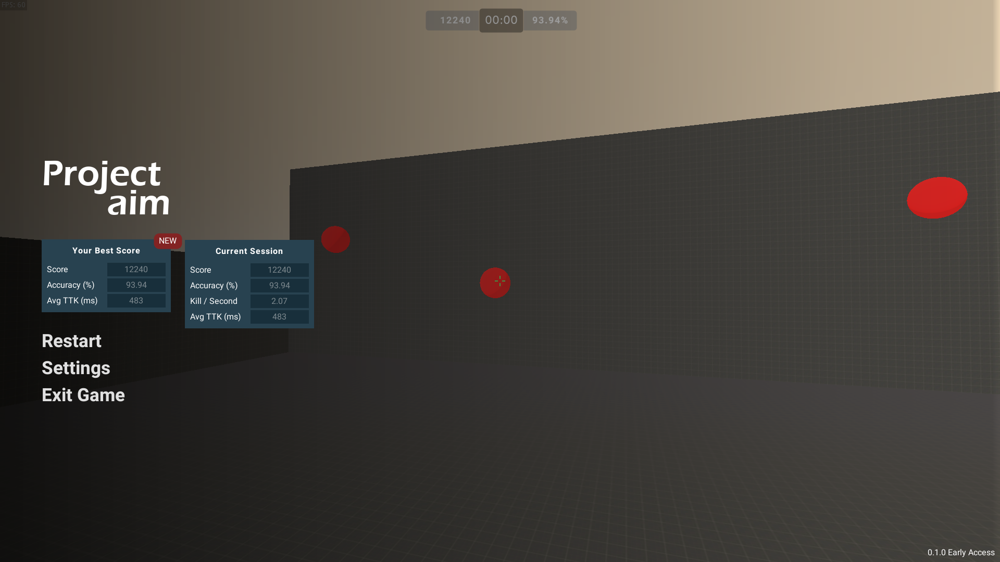
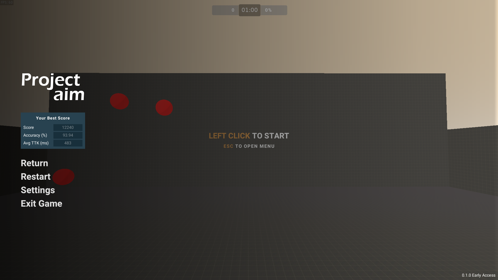
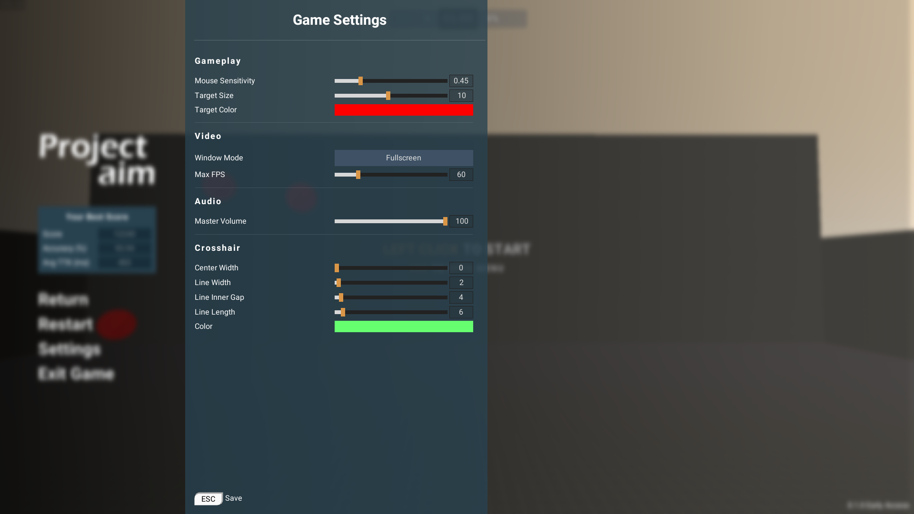
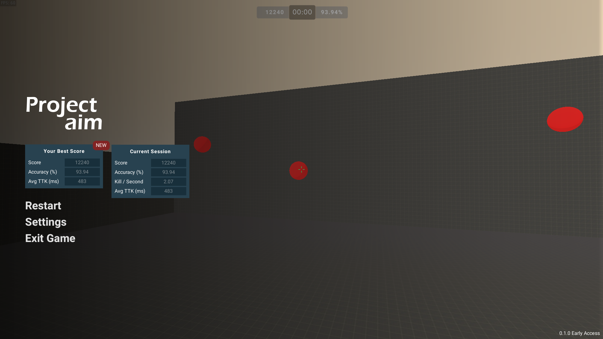

Download at Itch.io
Or view it on GitHub.
- Open source
- Crosshair customization
- Target customization
- Highscore system
- Supports Windows, Linux, and macOS
- Better hand-eye coordination
- Improve muscle memory







